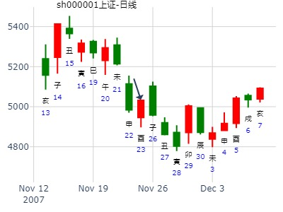
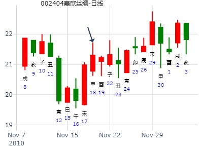

大壮之恒，预测下周上证A股走势(1.12-1.16).md
起卦公历：2009年1月9日15时20分(北京时间)。
起卦农历：二○○八年 十二月 十四日 申时。
干支： 戊子年 乙丑月 甲寅日 壬申时
主变卦 雷天大壮(坤宫) 之 雷风恒(震宫) [空亡:子、丑]
玄武 ━ ━ 兄弟戌土 ━ ━ 兄弟戌土 应
白虎 ━ ━ 子孙申金 ━ ━ 子孙申金
腾蛇 ━━━ 父母午火 世 ━━━ 父母午火
勾陈 ━━━ 兄弟辰土 ━━━ 子孙酉金 世
朱雀 ━━━ 官鬼寅木 ━━━ 妻财亥水
青龙 ━━━○妻财子水 应 ━ ━ 兄弟丑土
子丑合绊合克，此处应在未冲丑大涨。爻卦预测下周上证A股走势(1.12-1.16)
兄弟丑值月旺，照样不影响本卦涨。
测002030达安基因在2020年2月份走势
公历起卦时间：2020年1月27日16时23分 (手工指定)
干支：己亥年 丁丑月 己巳日 壬申时 （日空：戌亥）
神煞：驿马－亥 桃花－午 日禄－午 贵人－子，申
坤宫：雷天大壮 (六冲) 震宫：雷风恒
勾陈 兄弟庚戌土 ▅▅ ▅▅ 兄弟庚戌土 ▅▅ ▅▅ 应
朱雀 子孙庚申金 ▅▅ ▅▅ 子孙庚申金 ▅▅ ▅▅
青龙 父母庚午火 ▅▅▅▅▅ 世 父母庚午火 ▅▅▅▅▅
玄武 兄弟甲辰土 ▅▅▅▅▅ 子孙辛酉金 ▅▅▅▅▅ 世
白虎 官鬼甲寅木 ▅▅▅▅▅ 妻财辛亥水 ▅▅▅▅▅
腾蛇 妻财甲子水 ▅▅▅▅▅ 应 ○→ 兄弟辛丑土 ▅▅ ▅▅
主帖标题: 占600117
公历时间：2004年2月23日13时11分
农历时间：甲申年二月初四未时
干支：甲申年 丙寅月 壬申日 丁未时 (旬空：戌亥)
神煞：驿马—寅 桃花—酉 日禄—亥 贵人—卯，巳
坤宫：雷天大壮（六冲） 震宫：雷风恒
白虎 ▅▅ ▅▅ 兄弟庚戌土 ▅▅ ▅▅ 兄弟庚戌土 应
螣蛇 ▅▅ ▅▅ 子孙庚申金 ▅▅ ▅▅ 子孙庚申金
勾陈 ▅▅▅▅▅ 父母庚午火 世 ▅▅▅▅▅ 父母庚午火
朱雀 ▅▅▅▅▅ 兄弟甲辰土 ▅▅▅▅▅ 子孙辛酉金 世
青龙 ▅▅▅▅▅ 官鬼甲寅木 ▅▅▅▅▅ 妻财辛亥水
玄武 ▅▅▅▅▅ 妻财甲子水 应○→ ▅▅ ▅▅ 兄弟辛丑土
主帖标题: 浅谈2.28日大盘走势
2011年 2月 25日 15时 0分 (起卦方式：手动指定)
干支：辛卯年 庚寅月 辛亥日 丙申时 日空亡：寅卯
坤宫：雷天大壮 (六冲) 震宫：雷风恒
六神 伏神 本 卦 变 卦
螣蛇 兄弟戌土 ▅▅ ▅▅ 兄弟戌土 ▅▅ ▅▅ 应
勾陈 子孙申金 ▅▅ ▅▅ 子孙申金 ▅▅ ▅▅
朱雀 父母午火 ▅▅▅▅▅ 世 父母午火 ▅▅▅▅▅
青龙 兄弟辰土 ▅▅▅▅▅ 子孙酉金 ▅▅▅▅▅ 世
玄武 官鬼寅木 ▅▅▅▅▅ 妻财亥水 ▅▅▅▅▅
白虎 妻财子水 ▅▅▅▅▅ 应 ○→ 兄弟丑土 ▅▅ ▅▅
主帖标题: 03大家一起来，九缠烂打：上证2021.2.10收盘个位数是几？
上证2021.2.10收盘个位数是3-5范围？
排卦：元亨利贞网六爻在线排盘系统 https://www.china95.net
公历起卦时间：2021年2月9日21时17分 (电脑自动)
干支：辛丑年 庚寅月 戊子日 癸亥时 （日空：午未）
坤宫：雷天大壮 (六冲) 震宫：雷风恒
朱雀 兄弟庚戌土 ▅▅ ▅▅ 兄弟庚戌土 ▅▅ ▅▅ 应
青龙 子孙庚申金 ▅▅ ▅▅ 子孙庚申金 ▅▅ ▅▅
玄武 父母庚午火 ▅▅▅▅▅ 世 父母庚午火 ▅▅▅▅▅
白虎 兄弟甲辰土 ▅▅▅▅▅ 子孙辛酉金 ▅▅▅▅▅ 世
螣蛇 官鬼甲寅木 ▅▅▅▅▅ 妻财辛亥水 ▅▅▅▅▅
勾陈 妻财甲子水 ▅▅▅▅▅ 应 ○→ 兄弟辛丑土 ▅▅ ▅▅
大壮之恒。600663陆家嘴在1994年全年走势。--赵哲
时间: 1994-03-02
干支: 甲戌年丙寅月丁亥日 (旬空: 午未 )
雷天大壮 雷风恒
六神 伏神 本 卦 变 卦
青龙 ▅▅ ▅▅ 兄弟戌土 ▅▅ ▅▅ 兄弟戌土 应
玄武 ▅▅ ▅▅ 子孙申金 ▅▅ ▅▅ 子孙申金
白虎 ▅▅▅▅▅ 父母午火 世 ▅▅▅▅▅ 父母午火
腾蛇 ▅▅▅▅▅ 兄弟辰土 ▅▅▅▅▅ 子孙酉金 世
勾陈 ▅▅▅▅▅ 官鬼寅木 ▅▅▅▅▅ 妻财亥水
朱雀 ▅▅▅▅▅ 妻财子水 应Ｏ→ ▅▅ ▅▅ 兄弟丑土
子孙月破，申月实破才涨。
午未都没冲开丑土，原因或是子孙月破，或是午未旬空原因。
午未空。子月冲午，没涨还跌。
全年只涨了未月尾和申月。
性别：男 占事: 1609买入焦炭1309明天能获利吗
起卦方式：手动摇卦 六爻线上排盘系统
公历时间：2013年3月28日15时13分
干支：癸巳年 乙卯月 癸巳日 庚申时
旬空：午未 子丑 午未 子丑
神煞：驿马─亥 桃花─午 日禄─子 贵人─巳，卯
坤宫：雷天大壮（六冲） 震宫：雷风恒
六神 【本 卦】 【变 卦】
白虎 ▄▄ ▄▄ 兄弟庚戌土 ▄▄ ▄▄ 兄弟庚戌土 应
螣蛇 ▄▄ ▄▄ 子孙庚申金 ▄▄ ▄▄ 子孙庚申金
勾陈 ▄▄▄▄▄ 父母庚午火 世 ▄▄▄▄▄ 父母庚午火
朱雀 ▄▄▄▄▄ 兄弟甲辰土 ▄▄▄▄▄ 子孙辛酉金 世
青龙 ▄▄▄▄▄ 官鬼甲寅木 ▄▄▄▄▄ 妻财辛亥水
玄武 ▄▄▄▄▄ 妻财甲子水 应O-> ▄▄ ▄▄ 兄弟辛丑土
2015年乙未年己卯月上半月？
时间: 2015-03-01 21时
干支: 乙未年戊寅月丙子日 (旬空: 申酉 )
雷天大壮 雷风恒
六神 伏神 本 卦 变 卦
青龙 ▅▅ ▅▅ 兄弟戌土 ▅▅ ▅▅ 兄弟戌土 应
玄武 ▅▅ ▅▅ 子孙申金 ▅▅ ▅▅ 子孙申金
白虎 ▅▅▅▅▅ 父母午火 世 ▅▅▅▅▅ 父母午火
腾蛇 ▅▅▅▅▅ 兄弟辰土 ▅▅▅▅▅ 子孙酉金 世
勾陈 ▅▅▅▅▅ 官鬼寅木 ▅▅▅▅▅ 妻财亥水
朱雀 ▅▅▅▅▅ 妻财子水 应Ｏ→ ▅▅ ▅▅ 兄弟丑土
马后炮：
1.申酉子孙空时涨不动（而且寅月申破，等进入卯月则不破，又不空就拔地而起）
A股创业板指数399006下周走势如何？
公历：2017年3月11日9时53分
干支：丁酉年 癸卯月 丁酉日 巳时 日空：辰巳
占事：A股创业板指数399006下周走势如何？
【本卦】 【变卦】
六神 伏 神 坤宫：雷天大壮（六冲） 震宫：雷风恒
青龙 ━ ━ 兄弟庚戌 应 ━ ━ 兄弟庚戌
玄武 ━ ━ 子孙庚申 ━ ━ 子孙庚申
白虎 世 ━━━ 父母庚午 ━━━ 父母庚午
螣蛇 ━━━ 兄弟甲辰 世 ━━━ 子孙辛酉
勾陈 ━━━ 官鬼甲寅 ━━━ 妻财辛亥
朱雀 应 ━━━ 妻财甲子 ○→ ━ ━ 兄弟辛丑
主题：上海航空[600591]下周涨跌走向？
丁亥 甲辰 辛未 甲午 (戌亥空)
丁亥年二月廿十(2007/04/07 11:48:17)
雷天大壮 雷风恒
腾蛇 兄弟戌土 ∥ 兄弟戌土 ∥ 应
勾陈 子孙申金 ∥ 子孙申金 ∥
朱雀 父母午火 ／ 世 父母午火 ／
青龙 兄弟辰土 ／ 子孙酉金 ／ 世
玄武 官鬼寅木 ／ 妻财亥水 ／
白虎 妻财子水 ○ 应 兄弟丑土 ∥
主帖标题: 本版哪位版主、易友在年初时占了全年上证指数的卦，请把网址发上来
我四月份才占的年卦：http://bbs.64gua.com/thread-1721689-1-1.html
占事：2016申年上证指数走势
公历起卦时间：2016年4月6日7时25分
干支：丙申年 壬辰月 戊午日 丙辰时 （日空：子丑）
坤宫：雷天大壮 (六冲) 震宫：雷风恒 六神 伏神 本 卦 变 卦
朱雀 兄弟庚戌土 ▅▅ ▅▅ 兄弟庚戌土 ▅▅ ▅▅ 应 青龙 子孙庚申金 ▅▅ ▅▅ 子孙庚申金 ▅▅ ▅▅ 玄武 父母庚午火 ▅▅▅▅▅ 世 父母庚午火 ▅▅▅▅▅ 白虎 兄弟甲辰土 ▅▅▅▅▅ 子孙辛酉金 ▅▅▅▅▅ 世 腾蛇 官鬼甲寅木 ▅▅▅▅▅ 妻财辛亥水 ▅▅▅▅▅ 勾陈 妻财甲子水 ▅▅▅▅ 应 ○→ 兄弟辛丑土 ▅▅ ▅▅

主帖标题: 6月15日沪市涨跌？
周一已经一次性地跌到底了，即使不是底也差不多了，中长线可以大胆建仓，未来的日子只等数钱即可！
占事：2016申年上证指数走势
公历起卦时间：2016年4月6日7时25分
干支：丙申年 壬辰月 戊午日 丙辰时 （日空：子丑）
坤宫：雷天大壮 (六冲) 震宫：雷风恒
朱雀 兄弟庚戌土 ▅▅ ▅▅ 兄弟庚戌土 ▅▅ ▅▅ 应 青龙 子孙庚申金 ▅▅ ▅▅ 子孙庚申金 ▅▅ ▅▅ 玄武 父母庚午火 ▅▅▅▅▅ 世 父母庚午火 ▅▅▅▅▅ 白虎 兄弟甲辰土 ▅▅▅▅▅ 子孙辛酉金 ▅▅▅▅▅ 世 腾蛇 官鬼甲寅木 ▅▅▅▅▅ 妻财辛亥水 ▅▅▅▅▅ 勾陈 妻财甲子水 ▅▅▅▅ 应 ○→ 兄弟辛丑土 ▅▅ ▅▅
主帖标题: [09己丑岁个股跟踪预测实践]601628中国人寿与上日收盘对比涨跌！开市每天更新！
占事: 5月7日壬子日601628中国人寿与上日收盘对比涨跌！
起卦方式：手动摇卦 周易天地www.64gua.com六爻线上排盘系统
公历时间：2009年5月6日22时0分
干支：己丑年己巳月辛亥日己亥时 旬空：午未 戌亥 寅卯 辰巳
雷天大壮 雷风恒
腾蛇 ▅▅ ▅▅ 兄弟戌土 ▅▅ ▅▅ 兄弟戌土 应
勾陈 ▅▅ ▅▅ 子孙申金 ▅▅ ▅▅ 子孙申金
朱雀 ▅▅▅▅▅ 父母午火 世 ▅▅▅▅▅ 父母午火
青龙 ▅▅▅▅▅ 兄弟辰土 ▅▅▅▅▅ 子孙酉金 世
玄武 ▅▅▅▅▅ 官鬼寅木 ▅▅▅▅▅ 妻财亥水
白虎 ▅▅▅▅▅ 妻财子水 应Ｏ→ ▅▅ ▅▅ 兄弟丑土
主帖标题: [原创]每日预测沪市大盘方向
公历时间：2009年5月15日9时30分 星期五
干支：己丑年 己巳月 庚申日 辛巳时 (旬空：子丑)
雷天大壮 雷风恒
六神 伏神 本 卦 变 卦
腾蛇 ▅▅ ▅▅ 兄弟戌土 ▅▅ ▅▅ 兄弟戌土 应
勾陈 ▅▅ ▅▅ 子孙申金 ▅▅ ▅▅ 子孙申金
朱雀 ▅▅▅▅▅ 父母午火 世 ▅▅▅▅▅ 父母午火
青龙 ▅▅▅▅▅ 兄弟辰土 ▅▅▅▅▅ 子孙酉金 世
玄武 ▅▅▅▅▅ 官鬼寅木 ▅▅▅▅▅ 妻财亥水
白虎 ▅▅▅▅▅ 妻财子水 应Ｏ→ ▅▅ ▅▅ 兄弟丑土
主帖标题: 复旦复华(600624)明天涨跌
出生：没填 年 性别：男 占事：近期券商大涨吗
排卦：元亨利贞网http://www.china95.net
公历起卦时间：2014年5月21日16时52分 (在线摇卦)
干支：甲午年 己巳月 壬辰日 戊申时 （日空：午未）
坤宫：雷天大壮 (六冲) 震宫：雷风恒
白虎 兄弟庚戌土 ▅▅ ▅▅ 兄弟庚戌土 ▅▅ ▅▅ 应
腾蛇 子孙庚申金 ▅▅ ▅▅ 子孙庚申金 ▅▅ ▅▅
勾陈 父母庚午火 ▅▅▅▅▅ 世 父母庚午火 ▅▅▅▅▅
朱雀 兄弟甲辰土 ▅▅▅▅▅ 子孙辛酉金 ▅▅▅▅▅ 世
青龙 官鬼甲寅木 ▅▅▅▅▅ 妻财辛亥水 ▅▅▅▅▅
玄武 妻财甲子水 ▅▅▅▅▅ 应 ○→ 兄弟辛丑土 ▅▅ ▅▅
主帖标题: 中长线可以大胆建仓，未来的日子只等数钱即！
周一已经一次性地跌到底了，即使不是底也差不多了，中长线可以大胆建仓，未来的日子只等数钱即可！午月越跌越买 不必计较一时一日之得失！不管主力怎玩弄手段，长久来看玩不过易经天机，不管主力怎搓怎摩怎来回震荡，照样雷打不动 稳坐钓鱼台！
占事：2016申年上证指数走势
公历起卦时间：2016年4月6日7时25分
干支：丙申年 壬辰月 戊午日 丙辰时 （日空：子丑）
坤宫：雷天大壮 (六冲) 震宫：雷风恒 六神 伏神 本 卦 变 卦 朱雀 兄弟庚戌土 ▅▅ ▅▅ 兄弟庚戌土 ▅▅ ▅▅ 应 青龙 子孙庚申金 ▅▅ ▅▅ 子孙庚申金 ▅▅ ▅▅ 玄武 父母庚午火 ▅▅▅▅▅ 世 父母庚午火 ▅▅▅▅▅ 白虎 兄弟甲辰土 ▅▅▅▅▅ 子孙辛酉金 ▅▅▅▅▅ 世 腾蛇 官鬼甲寅木 ▅▅▅▅▅ 妻财辛亥水 ▅▅▅▅▅ 勾陈 妻财甲子水 ▅▅▅▅ 应 ○→ 兄弟辛丑土 ▅▅ ▅▅
现在午月是财逢月破、孙受克无气，财孙皆是一年中最低潮了
《范蠡.易经中线买卖指南》
财爻若值废休囚，货贱如尘宜措置
财爻旺相贵如金，有货必须乘早弃
山水相逢5月点说别人4月的卦
主帖标题: 发二个数卦看看下个低点在那里
公历时间：2017年5月7日20时19分 农历时间：丁酉年 四月十二日戌时
干 支：丁酉年 乙巳月 甲午日 甲戌时 旬 空：辰巳 寅卯 辰巳 申酉
神 煞：驿马─申 桃花─卯 日禄─寅 贵人─丑，未
坤宫：雷天大壮（六冲） 震宫：雷风恒
六神 【本 卦】 【变 卦】
玄武 ▄▄ ▄▄ 兄弟庚戌土 ▄▄ ▄▄ 兄弟庚戌土 应
白虎 ▄▄ ▄▄ 子孙庚申金 ▄▄ ▄▄ 子孙庚申金
螣蛇 ▄▄▄▄▄ 父母庚午火 世 ▄▄▄▄▄ 父母庚午火
勾陈 ▄▄▄▄▄ 兄弟甲辰土 ▄▄▄▄▄ 子孙辛酉金 世
朱雀 ▄▄▄▄▄ 官鬼甲寅木 ▄▄▄▄▄ 妻财辛亥水
青龙 ▄▄▄▄▄ 妻财甲子水 应O-> ▄▄ ▄▄ 兄弟辛丑土
下贴写了深证成指
求测人：某人，男，庚申(1980年)，自动起卦(起卦方式)
占问事宜：丁测上证丁酉年何月是顶？
公历：2017年5月19日14时54分，星期五。
干支：丁酉年 乙巳月 丙午日 乙未时 (卦身：卯)
主变卦 雷天大壮(坤宫) 之 雷风恒(震宫) [空亡:寅、卯]
青龙 ▅▅ ▅▅ 兄弟庚戌土 ▅▅ ▅▅ 兄弟庚戌土 应
玄武 ▅▅ ▅▅ 子孙庚申金 ▅▅ ▅▅ 子孙庚申金
白虎 ▅▅▅▅▅ 父母庚午火 世 ▅▅▅▅▅ 父母庚午火
螣蛇 ▅▅▅▅▅ 兄弟甲辰土 ▅▅▅▅▅ 子孙辛酉金 世
勾陈 ▅▅▅▅▅ 官鬼甲寅木 ▅▅▅▅▅ 妻财辛亥水
朱雀 ▅▅▅▅▅○妻财甲子水 应 ▅▅ ▅▅ 兄弟辛丑土
主帖标题: 慢牛卦例
缘起：因到大参林店铺买些中药，总体感觉不错，原来是个上市公司，仔细看了其各方面情况，起卦测之。
公历起卦时间：2019年5月8日8时52分 (按农历时间起卦)
干支：己亥年 己巳月 乙巳日 庚辰时 （日空：寅卯）
坤宫：雷天大壮 (六冲) 震宫：雷风恒
玄武 兄弟庚戌土 ▅▅ ▅▅ 兄弟庚戌土 ▅▅ ▅▅ 应
白虎 子孙庚申金 ▅▅ ▅▅ 子孙庚申金 ▅▅ ▅▅
螣蛇 父母庚午火 ▅▅▅▅▅ 世 父母庚午火 ▅▅▅▅▅
勾陈 兄弟甲辰土 ▅▅▅▅▅ 子孙辛酉金 ▅▅▅▅▅ 世
朱雀 官鬼甲寅木 ▅▅▅▅▅ 妻财辛亥水 ▅▅▅▅▅
青龙 妻财甲子水 ▅▅▅▅▅ 应 ○→ 兄弟辛丑土 ▅▅ ▅▅
长线后面涨到2021年1月见顶。
实际：长期反复上涨，最奇者，上爻戌土临月令时是明显的阶段高点。
马后炮：奇葩。可能财子弱极见底。
主帖标题: 2020.06.09日上证指数擂台赛第二十一场第2局 T方（日测）
起卦公历：2020年6月8日15时5分(北京时间)
干支： 庚子年 壬午月 壬午日 戊申时 (卦身：巳)未
主变卦 雷天大壮(坤宫) 之 雷风恒(震宫) [空亡:申、酉]
白虎 ━ ━ 兄弟戌土 ━ ━ 兄弟戌土 应
螣蛇 ━ ━ 子孙申金 ━ ━ 子孙申金
勾陈 ━━━ 父母午火 世 ━━━ 父母午火
朱雀 ━━━ 兄弟辰土 ━━━ 子孙酉金 世
青龙 ━━━ 官鬼寅木 ━━━ 妻财亥水
玄武 ━━━○妻财子水 应 ━ ━ 兄弟丑土
◇初九:壮于趾，征凶，有孚。 象曰：壮于趾，其孚穷也。 跌。
主帖标题: 六爻预测22日大盘行情
公历起卦时间：2011年7月22日9时30分 (手工指定)
干支：辛卯年 乙未月 戊寅日 丁巳时 （日空：申酉）
神煞：驿马－申 桃花－卯 日禄－巳 贵人－丑，未
坤宫：雷天大壮 (六冲) 震宫：雷风恒
六神 伏神 本 卦 变 卦
朱雀 兄弟庚戌土 ▅▅ ▅▅ 兄弟庚戌土 ▅▅ ▅▅ 应
青龙 子孙庚申金 ▅▅ ▅▅ 子孙庚申金 ▅▅ ▅▅
玄武 父母庚午火 ▅▅▅▅▅ 世 父母庚午火 ▅▅▅▅▅
白虎 兄弟甲辰土 ▅▅▅▅▅ 子孙辛酉金 ▅▅▅▅▅ 世
腾蛇 官鬼甲寅木 ▅▅▅▅▅ 妻财辛亥水 ▅▅▅▅▅
勾陈 妻财甲子水 ▅▅▅▅▅ 应 ○→ 兄弟辛丑土 ▅▅ ▅▅
大象有利，应克世，日冲子孙，看涨！个人观点！（昨晚因无法登入本论坛今天才发）
求测人：某人，女，水易缘
占问事宜：大盘何时企稳
公历：2015年7月8日15时59分，星期三。
神煞：驿马-亥 桃花-午 干禄-卯 贵人-子、申
干支：乙未年 癸未月 乙酉日 甲申时 (卦身：卯)
主变卦 雷天大壮(坤宫) 之 雷风恒(震宫) [空亡:午、未]
玄武 ▅▅ ▅▅ 兄弟庚戌土 ▅▅ ▅▅ 兄弟庚戌土 应
白虎 ▅▅ ▅▅ 子孙庚申金 ▅▅ ▅▅ 子孙庚申金
螣蛇 ▅▅▅▅▅ 父母庚午火 世 ▅▅▅▅▅ 父母庚午火
勾陈 ▅▅▅▅▅ 兄弟甲辰土 ▅▅▅▅▅ 子孙辛酉金 世
朱雀 ▅▅▅▅▅ 官鬼甲寅木 ▅▅▅▅▅ 妻财辛亥水
青龙 ▅▅▅▅▅○妻财甲子水 应 ▅▅ ▅▅ 兄弟辛丑土

占事:大盘7.27-7.31走势 起卦方式：手动摇卦 www.zhouyiworld.com
公历时间：2020年7月26日0时13分 农历时间：庚子年 六月初六日子时
干 支：庚子年 癸未月 庚午日 丙子时
旬 空：辰巳 申酉 戌亥 申酉
坤宫：雷天大壮（六冲） 震宫：雷风恒
螣蛇 ▄▄ ▄▄ 兄弟庚戌土 ▄▄ ▄▄ 兄弟庚戌土 应
勾陈 ▄▄ ▄▄ 子孙庚申金 ▄▄ ▄▄ 子孙庚申金
朱雀 ▄▄▄▄▄ 父母庚午火 世 ▄▄▄▄▄ 父母庚午火
青龙 ▄▄▄▄▄ 兄弟甲辰土 ▄▄▄▄▄ 子孙辛酉金 世
玄武 ▄▄▄▄▄ 官鬼甲寅木 ▄▄▄▄▄ 妻财辛亥水
白虎 ▄▄▄▄▄ 妻财甲子水 应O-> ▄▄ ▄▄ 兄弟辛丑土
子水月克日破回头克，无根 完全无用之爻，毫无招架之力。本周看大跌

主帖标题: 深证下周 作者： 64gua论坛 书籍
公历：2022年07月08日21时14分 http://www.iqing.net
四柱：壬寅年 丁未月 壬戌日 辛亥时 (日空：子丑)
卦名：坤宫4世六冲卦：雷天大壮 之 震宫3世卦：雷风恒
卦身：主卦午爻持世，卦身在初爻；阳爻持世，月卦身在卯
白虎 ▅ ▅ 兄弟庚戌土 ▅ ▅ 兄弟庚戌土 应
螣蛇 ▅ ▅ 子孙庚申金 ▅ ▅ 子孙庚申金
勾陈 ▅▅▅ 父母庚午火 世 ▅▅▅ 父母庚午火
朱雀 ▅▅▅ 兄弟甲辰土 ▅▅▅ 子孙辛酉金 世
青龙 ▅▅▅ 官鬼甲寅木 ▅▅▅ 妻财辛亥水
玄武 ▅▅▅ 妻财甲子水 应○→ ▅ ▅ 兄弟辛丑土
深周跌，辰日短买

占事：002028思源电气二周内会涨不？ 王
公历时间：2014年8月24日21时46分
干支：甲午年 壬申月 丁卯日 辛亥时 旬空：辰巳 戌亥 (戌亥) 寅卯
坤宫：雷天大壮（六冲） 震宫：雷风恒
六神 【本 卦】 【变 卦】
青龙 ▄▄ ▄▄ 兄弟庚戌土 ▄▄ ▄▄ 兄弟庚戌土 应
玄武 ▄▄ ▄▄ 子孙庚申金 ▄▄ ▄▄ 子孙庚申金
白虎 ▄▄▄▄▄ 父母庚午火 世 ▄▄▄▄▄ 父母庚午火
螣蛇 ▄▄▄▄▄ 兄弟甲辰土 ▄▄▄▄▄ 子孙辛酉金 世
勾陈 ▄▄▄▄▄ 官鬼甲寅木 ▄▄▄▄▄ 妻财辛亥水
朱雀 ▄▄▄▄▄ 妻财甲子水 应O-> ▄▄ ▄▄ 兄弟辛丑土
莫非子丑空时，要冲丑的未日大涨。
没有子丑空时，冲子就可以涨。
马后炮：
1.辰本应跌，但申子辰三合局反涨。
2.子丑合，一般逢未冲开而涨，此处逢午冲开而涨（或能跟申月子旺有关）
3。逢丑而合克跌。
4.寅则冲旺申而涨。
5.卯无子孙酉可冲。则水死于卯。
午日长阳，大涨8%。应在子丑合逢冲。
主帖标题: 8.22——空无信心
起卦公历：2022年8月19日14时53分(北京时间)
起卦农历：二○二二年 七月 廿二日 未时。
干支： 壬寅年 戊申月 甲辰日 辛未时 (卦身：卯)未
主变卦 雷天大壮(坤宫) 之 雷风恒(震宫) [空亡:寅、卯]
玄武 ━ ━ 兄弟庚戌土 ━ ━ 兄弟庚戌土 应
白虎 ━ ━ 子孙庚申金 ━ ━ 子孙庚申金
螣蛇 ━━━ 父母庚午火 世 ━━━ 父母庚午火
勾陈 ━━━ 兄弟甲辰土 ━━━ 子孙辛酉金 世
朱雀 ━━━ 官鬼甲寅木 ━━━ 妻财辛亥水
青龙 ━━━○妻财甲子水 应 ━ ━ 兄弟辛丑土
◇初九:壮于趾，征凶，有孚。 象曰：壮于趾，其孚穷也。
空头四面楚歌。
马后炮：酉日大跌，为财入辰库，酉为闭库。戌则开库。
主帖标题: 9.19——9.23日大盘涨跌？
公历时间：2011年9月16日19时0分
干支：辛卯年 丁酉月 甲戌日 甲戌时
旬空：午未 辰巳 申酉 申酉
坤宫：雷天大壮（六冲） 震宫：雷风恒
六神 【本 卦】 【变 卦】
玄武 ▄▄ ▄▄ 兄弟庚戌土 ▄▄ ▄▄ 兄弟庚戌土 应
白虎 ▄▄ ▄▄ 子孙庚申金 ▄▄ ▄▄ 子孙庚申金
螣蛇 ▄▄▄▄▄ 父母庚午火 世 ▄▄▄▄▄ 父母庚午火
勾陈 ▄▄▄▄▄ 兄弟甲辰土 ▄▄▄▄▄ 子孙辛酉金 世
朱雀 ▄▄▄▄▄ 官鬼甲寅木 ▄▄▄▄▄ 妻财辛亥水
青龙 ▄▄▄▄▄ 妻财甲子水 应O-> ▄▄ ▄▄ 兄弟辛丑土
世爻入墓；财月生日克动化拌；世无气财受克。又可能周阴线……财回头合应无大跌吧？仅供娱乐，不做参考……
大壮之恒，9月第3周大盘。追梦人出品
时间: 2015-09-12 13时56分
干支: 乙未年乙酉月辛卯日乙未时 (旬空: 午未 )
雷天大壮 雷风恒
六神 伏神 本 卦 变 卦
腾蛇 ▅▅ ▅▅ 兄弟戌土 ▅▅ ▅▅ 兄弟戌土 应
勾陈 ▅▅ ▅▅ 子孙申金 ▅▅ ▅▅ 子孙申金
朱雀 ▅▅▅▅▅ 父母午火 世 ▅▅▅▅▅ 父母午火
青龙 ▅▅▅▅▅ 兄弟辰土 ▅▅▅▅▅ 子孙酉金 世
玄武 ▅▅▅▅▅ 官鬼寅木 ▅▅▅▅▅ 妻财亥水
白虎 ▅▅▅▅▅ 妻财子水 应Ｏ→ ▅▅ ▅▅ 兄弟丑土
主帖标题: 梅花小孩：9月30日-10月6日黄金的走势 1491
主题：9月30日-10月5日黄金的走势 1497
己亥 癸酉 己巳 己巳 (戌亥空) 己亥年九月初一(2019/09/29 10:06:52)
雷天大壮 雷风恒
勾陈 兄弟戌土 ∥ 兄弟戌土 ∥ 应
朱雀 子孙申金 ∥ 子孙申金 ∥
青龙 父母午火 ／ 坤 父母午火 ／
玄武 兄弟辰土 ／ 子孙酉金 ／ 震
白虎 官鬼寅木 ／ 妻财亥水 ／
腾蛇 妻财子水 ○ 应 兄弟丑土 ∥
主帖标题: 9.08SZZS收盘
公历时间：2020年9月7日13时19分
干 支：庚子年 乙酉月 癸丑日 己未时
旬 空：辰巳 午未 寅卯 子丑
坤宫：雷天大壮（六冲） 震宫：雷风恒
白虎 ▄▄ ▄▄ 兄弟庚戌土 ▄▄ ▄▄ 兄弟庚戌土 应
螣蛇 ▄▄ ▄▄ 子孙庚申金 ▄▄ ▄▄ 子孙庚申金
勾陈 ▄▄▄▄▄ 父母庚午火 世 ▄▄▄▄▄ 父母庚午火
朱雀 ▄▄▄▄▄ 兄弟甲辰土 ▄▄▄▄▄ 子孙辛酉金 世
青龙 ▄▄▄▄▄ 官鬼甲寅木 ▄▄▄▄▄ 妻财辛亥水
玄武 ▄▄▄▄▄ 妻财甲子水 应○ ▄▄ ▄▄ 兄弟辛丑土
测周四沪指涨跌
起卦公历：2008年10月29日15时1分(北京时间)。
起卦干支： 戊子年 壬戌月 壬寅日 戊申时
主变卦 雷天大壮(坤宫) 之 雷风恒(震宫) [空亡:辰、巳]
白虎 ━ ━ 兄弟戌土 ━ ━ 兄弟戌土 应
螣蛇 ━ ━ 子孙申金 ━ ━ 子孙申金
勾陈 ━━━ 父母午火 世 ━━━ 父母午火
朱雀 ━━━ 兄弟辰土 ━━━ 子孙酉金 世
青龙 ━━━ 官鬼寅木 ━━━ 妻财亥水
玄武 ━━━○妻财子水 应 ━ ━ 兄弟丑土
周四：父母爻持世旺。应财动克世，不幸的是妻动化兄化六合。明日 跌 ！
财爻弱于月日，此时当看动爻，在未时发动而涨。
不过申金于起卦日暗动，化解了子化丑回头克的定性。变成待时而涨了。
鲁润股份10月19-23日行情[再人原创] 鲁润股份一周行情？
起卦时间：2009年10月18日08时57分（手动起卦）
干支：己丑年 甲戌月 丙申日 壬辰时
旬空：午未 申酉 辰巳 午未
六神 伏神 坤宫：雷天大壮（六冲） 震宫：雷风恒
【本 卦】 【变 卦】
青龙 ▅▅ ▅▅ 兄弟庚戌土 ▅▅ ▅▅ 兄弟庚戌土 应
玄武 ▅▅ ▅▅ 子孙庚申金 ▅▅ ▅▅ 子孙庚申金
白虎 ▅▅▅▅▅ 父母庚午火 世 ▅▅▅▅▅ 父母庚午火
滕蛇 ▅▅▅▅▅ 兄弟甲辰土 ▅▅▅▅▅ 子孙辛酉金 世
勾陈 ▅▅▅▅▅ 官鬼甲寅木 ▅▅▅▅▅ 妻财辛亥水
朱雀 ▅▅▅▅▅ 妻财甲子水 应 → ▅▅ ▅▅ 兄弟辛丑土
断：涨，连续大涨，至周五丑日回落（用神独动得长生；阳爻持世，用神在初爻发动，说明行情在第一天启动；化丑土回头克，元神在丑日入墓，故周五丑日跌。细看，则外围股市及大盘皆土爻皆克制用神，说明大盘主跌，而该股因为业绩优秀而大涨）。
占事：招财公主测本月大盘？钱币卦
公历时间：2014年10月12日13时19分
干 支：甲午年 甲戌月 丙辰日 乙未时 旬空：辰巳 申酉 (子丑) 辰巳
坤宫：雷天大壮（六冲） 震宫：雷风恒
六神 【本 卦】 【变 卦】
青龙 ▄▄ ▄▄ 兄弟庚戌土 ▄▄ ▄▄ 兄弟庚戌土 应
玄武 ▄▄ ▄▄ 子孙庚申金 ▄▄ ▄▄ 子孙庚申金
白虎 ▄▄▄▄▄ 父母庚午火 世 ▄▄▄▄▄ 父母庚午火
螣蛇 ▄▄▄▄▄ 兄弟甲辰土 ▄▄▄▄▄ 子孙辛酉金 世
勾陈 ▄▄▄▄▄ 官鬼甲寅木 ▄▄▄▄▄ 妻财辛亥水
朱雀 ▄▄▄▄▄ 妻财甲子水 应O-> ▄▄ ▄▄ 兄弟辛丑土
初九：壮于趾，征凶，有孚。
象曰：壮于趾，其孚穷也。
子丑空时，逢子涨丑跌。未涨。
招财公主测大盘未来一个月走势
第1，3花
第2，1花
第3，1花
第4，1花
第5。2花
第6，2花
风生水起(594429828)?14:44:01
占事：大盘十一月
公历时间：2015年10月30日14时43分
干 支：乙未年丙戌月己卯日辛未时
旬 空：辰巳 午未 (申酉) 戌亥
坤宫：雷天大壮（六冲） 震宫：雷风恒?
勾陈 ▄▄ ▄▄ 兄弟庚戌土 ▄▄ ▄▄ 兄弟庚戌土 应
朱雀 ▄▄ ▄▄ 子孙庚申金 ▄▄ ▄▄ 子孙庚申金
青龙 ▄▄▄▄▄ 父母庚午火 世 ▄▄▄▄▄ 父母庚午火
玄武 ▄▄▄▄▄ 兄弟甲辰土 ▄▄▄▄▄ 子孙辛酉金 世
白虎 ▄▄▄▄▄ 官鬼甲寅木 ▄▄▄▄▄ 妻财辛亥水
螣蛇 ▄▄▄▄▄ 妻财甲子水 应O-> ▄▄ ▄▄ 兄弟辛丑土
戌日6日（戌月戌日，辰兄日月破，无力墓子孙，而且墓父母爻世爻，反而涨）
但18日戌日就不一定了，因为辰巳空。
数源科技1024周卦。大壮之恒，先来一轮跌。.md
时间: 2022-10-23
干支: 壬寅年庚戌月己酉日 (旬空: 寅卯 )
雷天大壮 雷风恒
六神 伏神 本 卦 变 卦
勾陈 ▅▅ ▅▅ 兄弟戌土 ▅▅ ▅▅ 兄弟戌土 应
朱雀 ▅▅ ▅▅ 子孙申金 ▅▅ ▅▅ 子孙申金
青龙 ▅▅▅▅▅ 父母午火 世 ▅▅▅▅▅ 父母午火
玄武 ▅▅▅▅▅ 兄弟辰土 ▅▅▅▅▅ 子孙酉金 世
白虎 ▅▅▅▅▅ 官鬼寅木 ▅▅▅▅▅ 妻财亥水
腾蛇 ▅▅▅▅▅ 妻财子水 应Ｏ→ ▅▅ ▅▅ 兄弟丑土
主帖标题: [原创]每日预测深沪两市大盘指数
公历时间：2007年11月23日9时30分 星期五
干支：丁亥年 辛亥月 辛酉日 癸巳时 (旬空：子丑)
雷天大壮 雷风恒
六神 伏神 本 卦 变 卦
腾蛇 ▅▅ ▅▅ 兄弟戌土 ▅▅ ▅▅ 兄弟戌土 应
勾陈 ▅▅ ▅▅ 子孙申金 ▅▅ ▅▅ 子孙申金
朱雀 ▅▅▅▅▅ 父母午火 世 ▅▅▅▅▅ 父母午火
青龙 ▅▅▅▅▅ 兄弟辰土 ▅▅▅▅▅ 子孙酉金 世
玄武 ▅▅▅▅▅ 官鬼寅木 ▅▅▅▅▅ 妻财亥水
白虎 ▅▅▅▅▅ 妻财子水 应Ｏ→ ▅▅ ▅▅ 兄弟丑土

主帖标题: 嘉欣丝绸19日最高价是多少？奖励金币
屡败屡战.......[s:13]
占事: 嘉欣丝绸19日最高价是多少？ 起卦方式：手工指定
公历时间：2010年11月18日19时
干支：庚寅年 丁亥月 壬申日 旬空：午未 午未 戌亥
坤宫：雷天大壮（六冲） 震宫：雷风恒
白虎 ▄▄ ▄▄ 兄弟庚戌土 ▄▄ ▄▄ 兄弟庚戌土 应
螣蛇 ▄▄ ▄▄ 子孙庚申金 ▄▄ ▄▄ 子孙庚申金
勾陈 ▄▄▄▄▄ 父母庚午火 世 ▄▄▄▄▄ 父母庚午火
朱雀 ▄▄▄▄▄ 兄弟甲辰土 ▄▄▄▄▄ 子孙辛酉金 世
青龙 ▄▄▄▄▄ 官鬼甲寅木 ▄▄▄▄▄ 妻财辛亥水
玄武 ▄▄▄▄▄ 妻财甲子水 应O-> ▄▄ ▄▄ 兄弟辛丑土
判： 21.99元

求测人：某人，男，庚申(1980年)，自动起卦(起卦方式)
占问事宜：测中潜股份11.16-11.21哪日是顶？
公历：2016年11月17日9时1分，星期四。
干支：丙申年 己亥月 癸卯日 丁巳时 (卦身：卯) [空亡:辰、巳]
主变卦 雷天大壮(坤宫) 之 雷风恒(震宫) [空亡:辰、巳]
白虎 ▅▅ ▅▅ 兄弟庚戌土 ▅▅ ▅▅ 兄弟庚戌土 应
螣蛇 ▅▅ ▅▅ 子孙庚申金 ▅▅ ▅▅ 子孙庚申金
勾陈 ▅▅▅▅▅ 父母庚午火 世 ▅▅▅▅▅ 父母庚午火
朱雀 ▅▅▅▅▅ 兄弟甲辰土 ▅▅▅▅▅ 子孙辛酉金 世
青龙 ▅▅▅▅▅ 官鬼甲寅木 ▅▅▅▅▅ 妻财辛亥水
玄武 ▅▅▅▅▅○妻财甲子水 应 ▅▅ ▅▅ 兄弟辛丑土
主帖标题: 000778新兴铸管27日涨跌
占事：新兴铸管(000778今天涨跌
排卦：元亨利贞网六爻在线排盘系统 http://www.china95.net
公历起卦时间：2013年12月27日7时58分 (电脑自动)
干支：癸巳年 甲子月 丁卯日 甲辰时 （日空：戌亥）
坤宫：雷天大壮 (六冲) 震宫：雷风恒
青龙 兄弟庚戌土 ▅▅ ▅▅ 兄弟庚戌土 ▅▅ ▅▅ 应
玄武 子孙庚申金 ▅▅ ▅▅ 子孙庚申金 ▅▅ ▅▅
白虎 父母庚午火 ▅▅▅▅▅ 世 父母庚午火 ▅▅▅▅▅
腾蛇 兄弟甲辰土 ▅▅▅▅▅ 子孙辛酉金 ▅▅▅▅▅ 世
勾陈 官鬼甲寅木 ▅▅▅▅▅ 妻财辛亥水 ▅▅▅▅▅
朱雀 妻财甲子水 ▅▅▅▅▅ 应 ○→ 兄弟辛丑土 ▅▅ ▅▅
试测12.23上证收盘个位数？+ayn
公历起卦时间：2021年12月22日16时23分 (电脑自动)
干支：辛丑年 庚子月 甲辰日 壬申时 （日空：寅卯）
坤宫：雷天大壮 (六冲) 震宫：雷风恒
六神 伏神 本 卦 变 卦
玄武 兄弟庚戌土 ▅▅ ▅▅ 兄弟庚戌土 ▅▅ ▅▅ 应
白虎 子孙庚申金 ▅▅ ▅▅ 子孙庚申金 ▅▅ ▅▅
螣蛇 父母庚午火 ▅▅▅▅▅ 世 父母庚午火 ▅▅▅▅▅
勾陈 兄弟甲辰土 ▅▅▅▅▅ 子孙辛酉金 ▅▅▅▅▅ 世
朱雀 官鬼甲寅木 ▅▅▅▅▅ 妻财辛亥水 ▅▅▅▅▅
青龙 妻财甲子水 ▅▅▅▅▅ 应 ○→ 兄弟辛丑土 ▅▅ ▅▅